Cambodia Index: - 1 - 2 - 3 - 4 - 5 - 6 - 7 - 8 - 9 - 10 - 11 - 12
I will start this day with some pictures of the hotel. The morning was focused on Cambodian history. We got the chance to learn more about Cambodia by visiting the Killing Fields and the Genocide Museum. Then for lunch we got to see the fun little shop called, "USA Donuts" where a man ships American products over and runs a little store selling only American goods.
Then we hurried back to get ready for our visit to the New Life
church. Our team was going to help with worship for their Wednesday
night service and Pastor David preached the message that night. It
was a really great experience - being at New Life was just like being back
home at Harvest (except we don't have translators back home!)


The tiny bananas were always a favorite.
There was almost always someone from our group
in the computer room
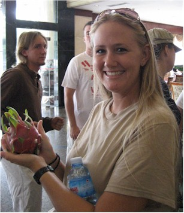
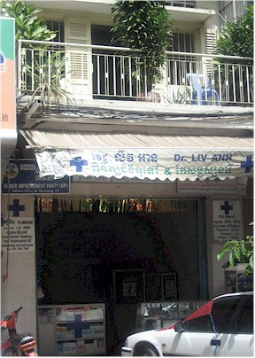
interpreters got for her. It's the one that's like
a black & white kiwi inside.
We were told the hospitals had long lines but
I never saw anyone at one of these clinic places.
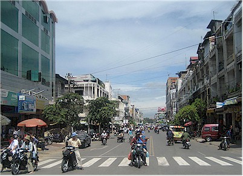
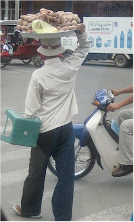

Cambodian license plate.
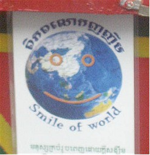
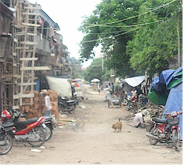
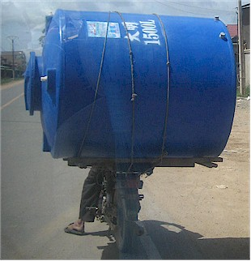
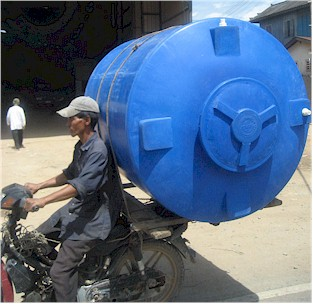
One of many interesting things we saw on the back of a "moto."
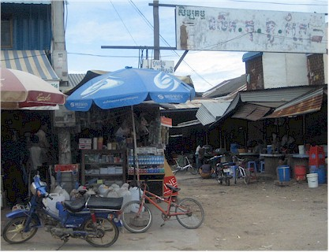
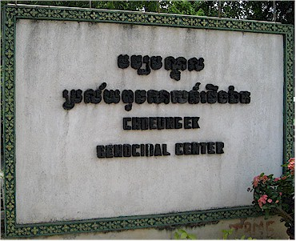
on one of the killing fields outside Phnom Penh.
| I will take a break here in case you need a refresher
about the Cambodian genocide:
In 1975, the Khmer Rouge gained control of the government. They
wanted Cambodia Those that remained were worked under starving conditions until a
large number of The number of the victims is estimated at approximately 1.7 million Cambodians between 1975- 1979, including deaths from slave labor. [Cambodian Genocide Program, Yale University] via Wikipedia |
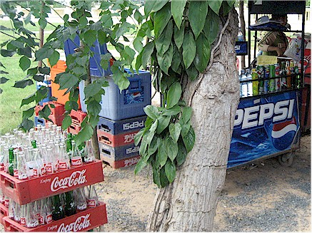
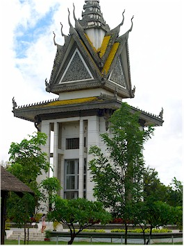
Here it was not optional, she would hunt you down to get her bottle back! (Jason)
and other sad things removed from the area.
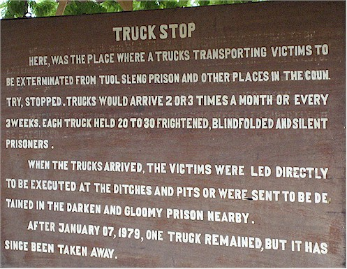
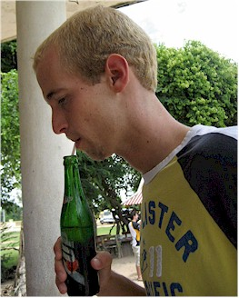
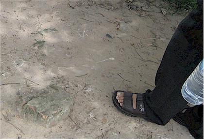
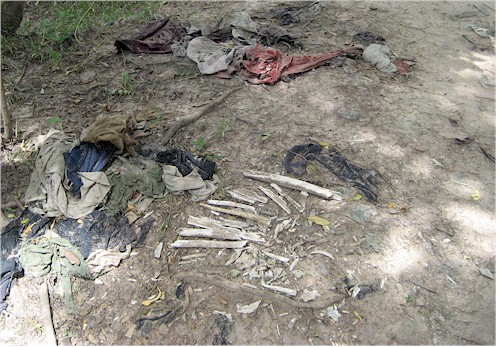
went to have a closer look - it was a femur.
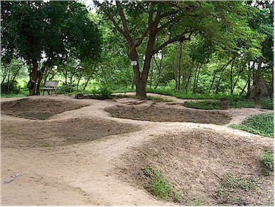
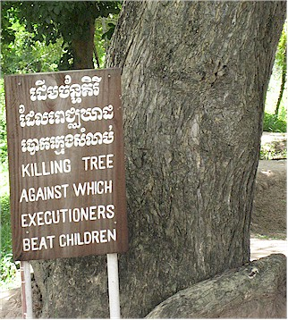
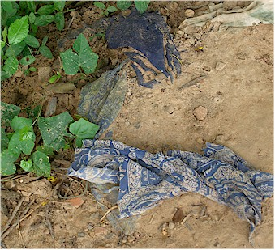
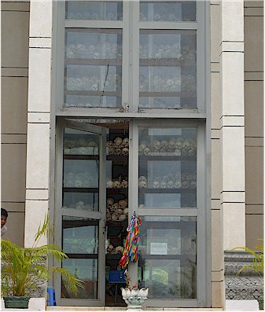
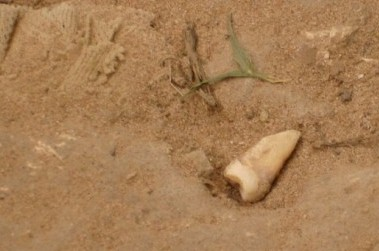
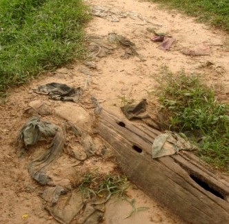
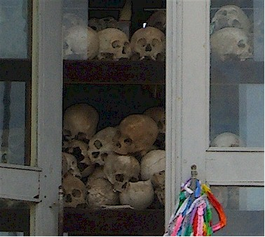
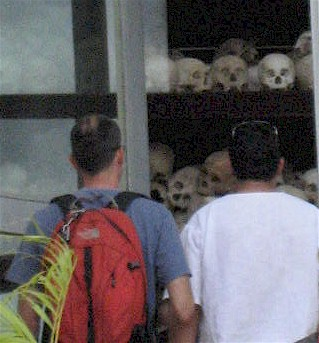
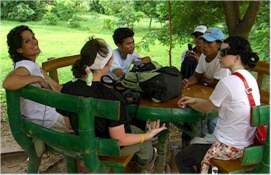
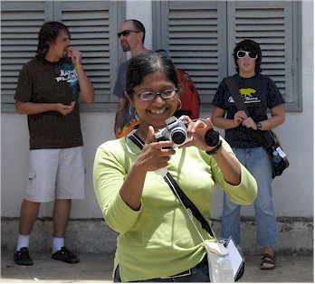
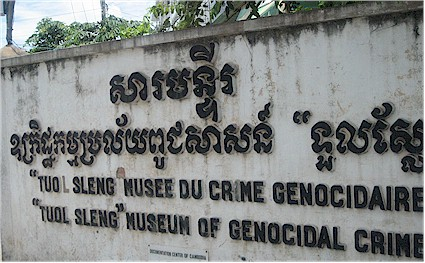
converted into a detention and torture area. They documented every horrible
thing they did to those people, it was horrible.
Below is part 1 and 2 of a big billboard at the entrance to
the museum that explains things.
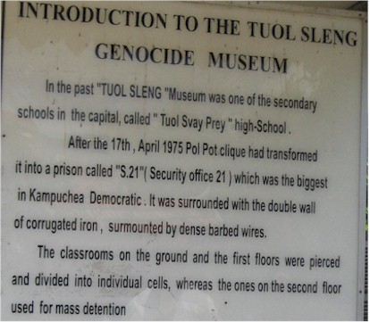
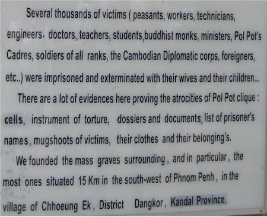
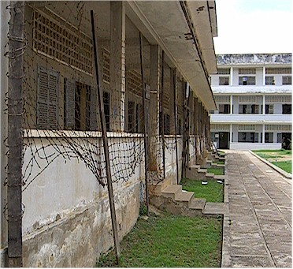
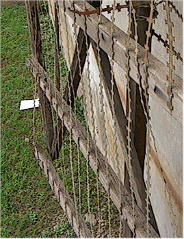
They put these razor wire frames all around to convert the classrooms into a detention area.
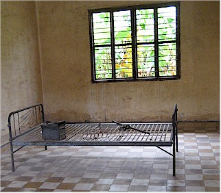
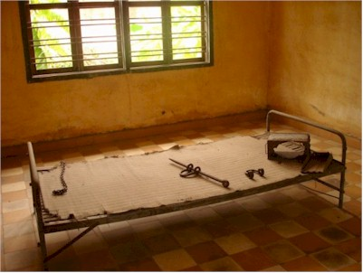
These classrooms were converted into torture
rooms.
On the wall in each room was a large picture of the aftermath
of a torture that had occurred there.
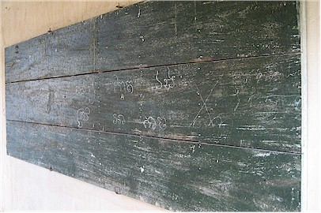
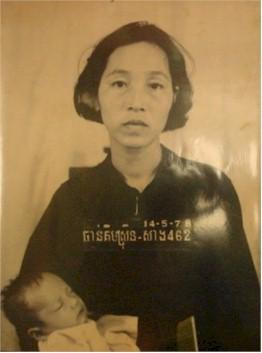
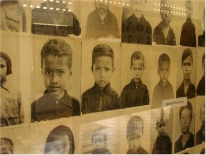
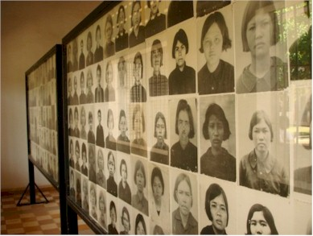
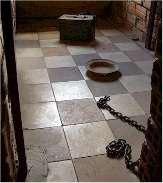
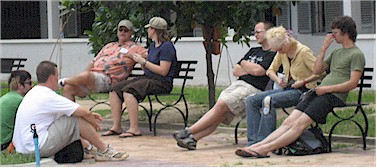
There was one thing of beauty in
the whole place, these flowers.
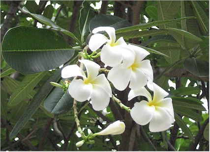
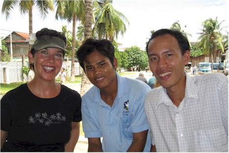
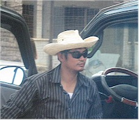
Sarat in his funny hat gave us a
smile after all that sadness.
OK - now we're back on the road and headed to USA
Donuts
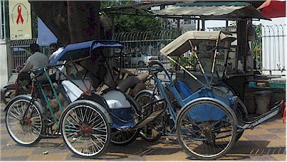
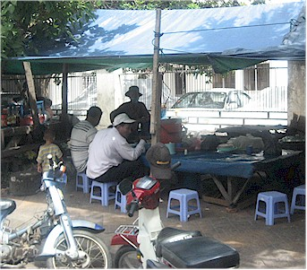
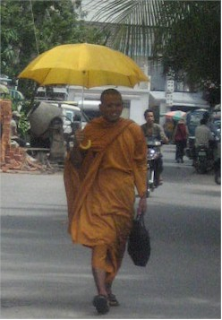
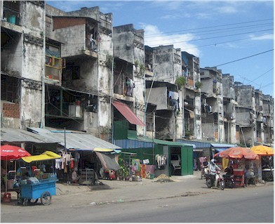
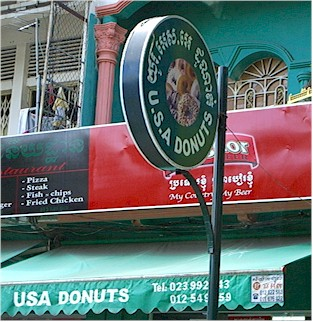
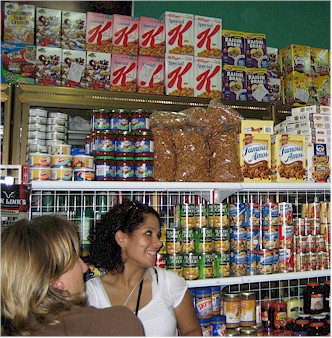
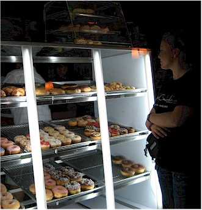
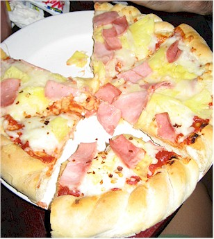
We had food such as donuts, pizza, quesadillas, pop, and
candy.
(OK, so some of that is Italian & Mexican food - but the American
versions!)
Then most of us felt really ill afterward.
everyone to get their food.
on that bike with this tank on board.
following day.
flying proudly like that.
to New Life church.
Craziness during praise & worship. They told us they had never
had an energy level
that high before - I believe it! There was an unrelated group there
from California that
night too, you can see two of them in the lower left.
was facing the entire congregation at the time.
Joe - too cool for school.
Well, until the trip was over,
then he went back to school.
meant the world to her.
Sam is an accomplished keyboard player, but found out 3 weeks before
we
left that we had no drummer. He learned in 3 weeks and did an awesome
job!
that night. They were quite a pair when they got going.
Hillsong Australia & Delirious? from London.
Group shot - these guys became great friends during the course of the trip.
Pastor Jesse and the team came back to the hotel with us for dinner and a rousing game of UNO (Cambodian rules.)
Cambodia Index: 1 - 2 - 3 - 4 - 5 - 6 - 7 - 8 - 9 - 10 - 11 - 12